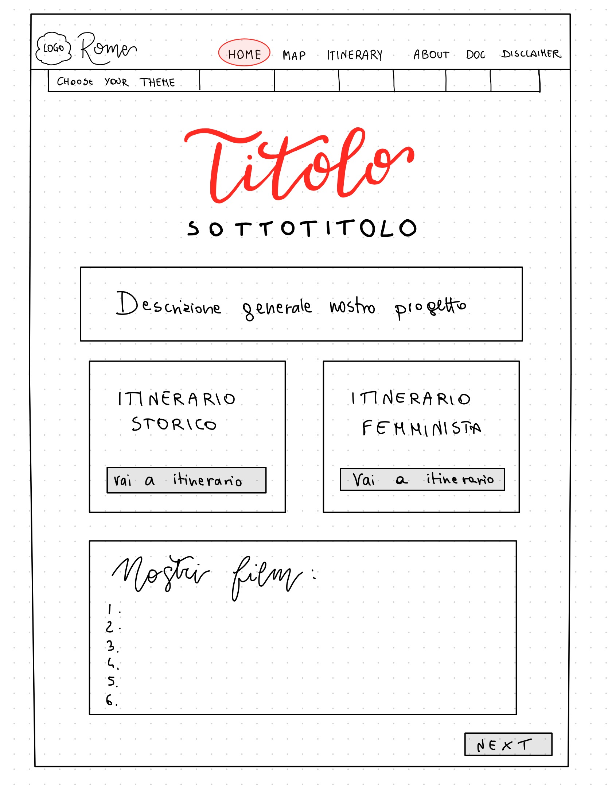
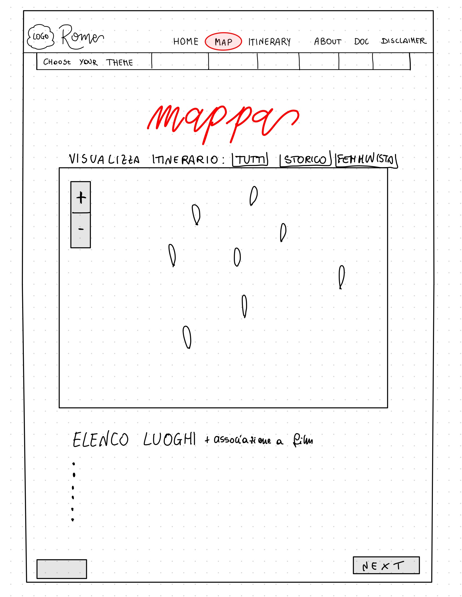
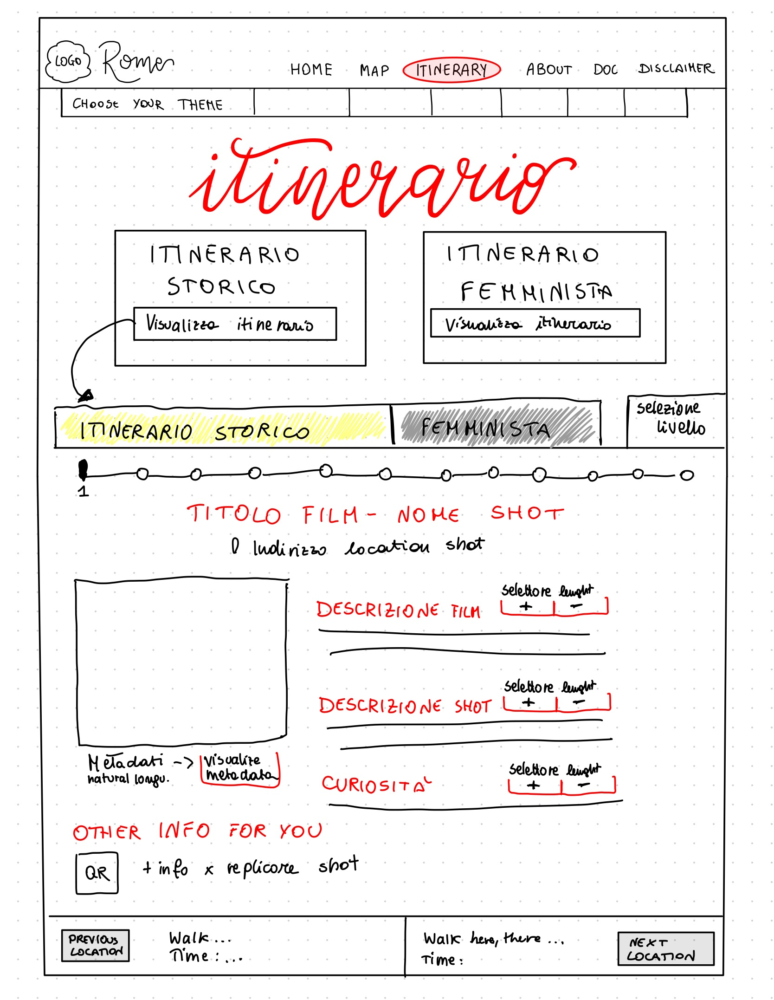
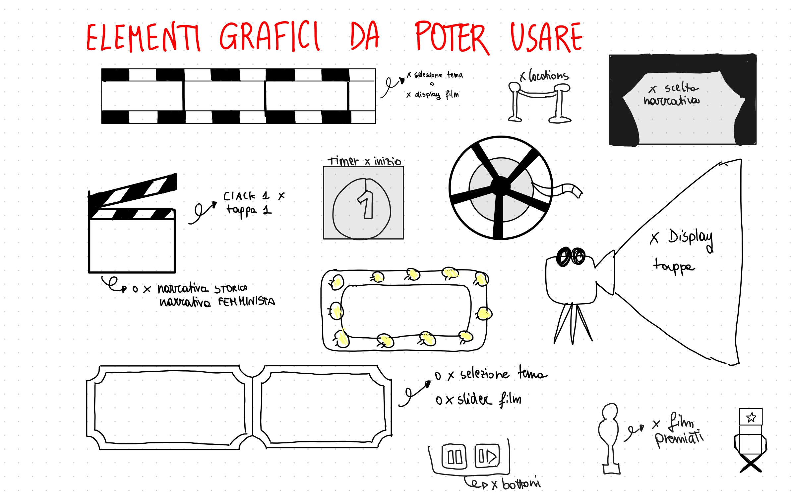

Documentation
This section collects the documentation related to the design and development of Rome in Two Takes. It presents the different stages of the project, from the initial brainstorming to research, prototyping, content design and implementation.
Our Workflow
Brainstorming
Concept
Research
Prototyping
Content Design
Development
01. Brainstorming
The project began with a brainstorming phase in which different themes, cities, films and possible locations were considered. The aim was to identify a subject that could support both a meaningful itinerary and different interpretations of the same urban space.
02. Concept and Film Selection
After comparing different possibilities and discussing the films, Rome was selected as the setting of the project. The selected films were chosen both according to personal interest and because they allowed the development of two complementary narratives.
The first narrative follows the transformation of Rome through different historical periods, while the second focuses on the relationship between women and urban space.
03. Research
The research phase included the analysis of websites and digital projects related to cinema and film locations, as well as research on the selected films, their historical context and the real locations used during filming.
The geographical distribution of the locations was also studied in order to create plausible itineraries through the city.
04. Paper Prototyping
Before starting the implementation of the website, the main pages and navigation structure were first developed through paper prototypes.
These sketches helped define the organisation of the homepage, map, itineraries and documentation pages.



Graphic Ideas

Preliminary visual ideas developed for the graphic identity of the project.
05. Content and Metadata Design
A common structure was defined for the information associated with each film location, in order to maintain consistency throughout the website.
Different levels of description were also considered in order to provide users with shorter or more detailed information.
06. Development
The website was developed using HTML, CSS and JavaScript. The development phase included the creation of the main pages, the interactive map, the itinerary system and the different graphical themes.